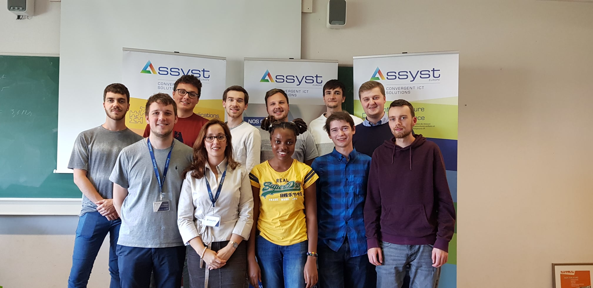

L'EPHEC a reçu Assyt Europe qui nous a parlé de leur entreprise ainsi que de leurs stages.
Assyst se situe à Braine-l'Alleud, Avenue du Japon 1.
Elle existe depuis 15 ans et elle offre des infrastructures informatiques avec les dernières technologies de pointes.
Ils sont spécialisés en infrastructure et infogérance, cybersécurité, VoIP, cloud, IA.
De plus, Assyst et Mme Noiset nous a rassuré quant à la faisabilité des stages par rapport à nos compétences actuelles.
Enfin, leurs stages présentés étaient les suivants :
- La conception et réalisation d'une interface IoT de géolocalisation pour une intelligence artificielle
- La sécurisation au moyen de l'intelligence artificielle d'un environnelent BYOD en utilisant Microsoft Office365/Azure
Cependant, après mon entretien, je n'ai pas été repris.
